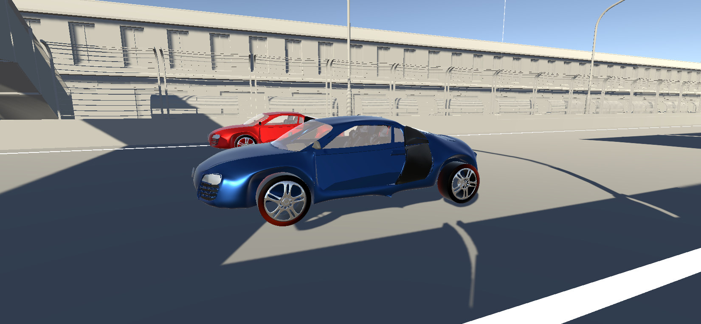
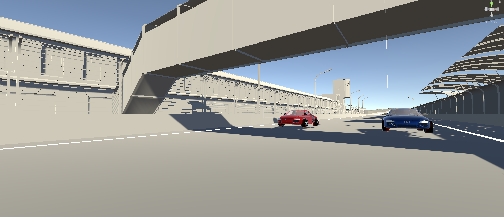
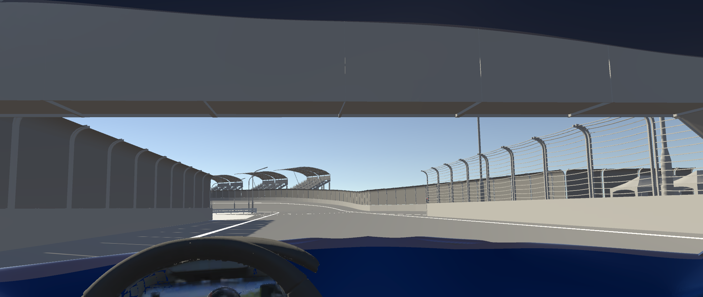

O Projekcie
Car Simulation AI to zaawansowany projekt łączący realistyczną symulację fizyki pojazdu z najnowszymi osiągnięciami w dziedzinie sztucznej inteligencji. Naszym celem było stworzenie wirtualnego środowiska, w którym autonomiczny agent uczy się optymalnego toru jazdy wykorzystując bibliotekę Unity ML-Agents.
Teraz masz unikalną możliwość zmierzenia się z maszyną, która ewoluowała poprzez tysiące prób i błędów w ramach głębokiego uczenia. Czy zdołasz pokonać wyuczonego bota w bezpośrednim starciu na torze?
Główne Funkcje
Zaawansowana Fizyka
Realistyczny model jazdy bazujący na WheelColliders. Poczuj masę pojazdu, napęd na tylną oś i twardość sportowego zawieszenia.
Przeciwnik AI
Zamiast oskryptowanego bota, ścigasz się z modelem sieci neuronowej (ONNX) wytrenowanym zaawansowanym algorytmem PPO.
Wyścig z AI
Możliwość rywalizacji z maszyną w bezpośrednim starciu z perspektywy pierwszej osoby.
Rozgrywka w Akcji


